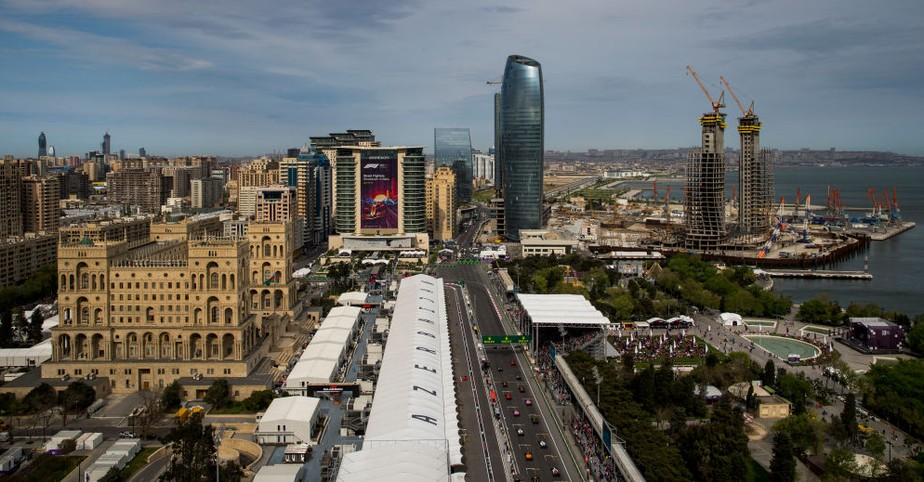
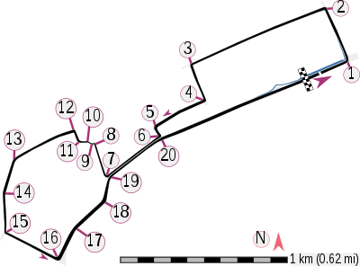

NAVEGUE
Home
Pilotos
Calendário/Tabela
Grand Prix
Construtoras
Últimas Notícias
GP do Azerbaijão
SOBRE
A pista do Azerbaijão é um circuito de corrida localizado na cidade de Baku, capital do Azerbaijão. Foi inaugurada em 2016 e é conhecida por ser uma das pistas mais desafiadoras do calendário da Fórmula 1, com uma combinação de retas longas e curvas estreitas. Com 6,003 km de extensão, a pista tem 20 curvas e é projetada para permitir ultrapassagens e corridas emocionantes. A primeira corrida da Fórmula 1 na pista do Azerbaijão aconteceu em 2017 e desde então tem sido um dos destaques do calendário da Fórmula 1.
Circuitos Utilizados
Bacu

INFORMAÇÕES DA CORRIDA

Localização
Bacu, Azerbaijão
Voltas
51
Percurso
6.003 km
Total
306.049 km
Curvas
20
Pole
Charles Leclerc
Anos Disputados
6
Última Disputa
2023
Maior vencedor
Sergio Perez
Última Corrida - Pódio
Sergio Perez